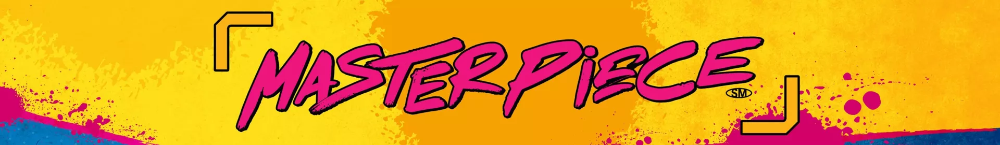

Il Progetto di Stagione

Innovazione STEAM
Durante la stagione 2023/2024, il team Gome Neve si è concentrato sull'interazione tra tecnologia e arte. Steamposio è nato come un concetto di condivisione della conoscenza, dove l’innovazione incontra la creatività.
Una prima problematica riscontrata sul tema è la difficoltà nella comunicazione dell’arte che nella nostra valle spesso viene meno, per via del disinteresse della comunità (soprattutto da parte dei giovani). Gli artisti non hanno possibilità di incontro e dialogo, a causa della mancanza di un evento unitario che permetta di comunicare diverse discipline.
Per questo abbiamo preso spunto da un evento presente ormai dal 2012 nella nostra Valle: il simposio di scultura Tony Gross. Un evento culturalmente importante ma con poca affluenza, che abbiamo immaginato di trasformare in un evento capace di far dialogare materie scientifiche e arte per creare qualcosa di nuovo e unico nel suo genere.